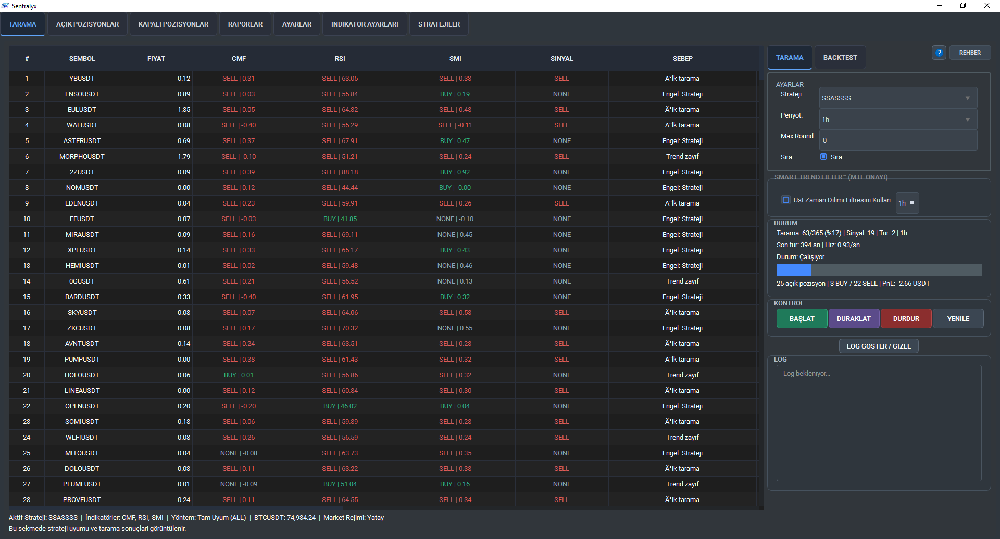

Sentralyx ile piyasa verilerini saniyeler içinde analiz edin, stratejinizi belirleyin ve verimliliğinizi artırın.
Terminali Keşfet
Bir trader'ın ihtiyacını olan tüm araçlar tek bir terminalde toplandı.
Piyasadaki yüzlerce pariteyi aynı anda, belirlediğiniz teknik kriterlere göre tarayın. MTF onaylı ile sinyal kalitesini en üst seviyeye taşıyın.
İnceleTüm işlemlerinizi detaylı olarak raporlayın. Başarı oranınızı, kâr/zarar grafiklerinizi ve strateji performansınızı tek ekrandan izleyin.
Detaylı BilgiKapalı pozisyonlarınızın detaylı analizini yapın. Giriş/çıkış fiyatları, kâr/zarar oranları ve işlem süreleri hakkında veriye erişim.
İnceleTüm açık işlemlerinizi anlık PnL verileriyle takip edin. Stop Loss ve Take Profit seviyelerini yönetin.
YönetMajority, Scoring ve Full Consensus yöntemleriyle kendi karar mekanizmanızı kurun. Wizard ile hızlı strateji oluşturun.
Detaylı BilgiKullandığınız indikatörlerin parametrelerini stratejinize göre optimize edin. AL/SAT kurallarını özelleştirin.
YapılandırAPI bağlantılar, risk yönetimi ve sistem ayarlarınızı tek bir yerden yönetin. Borsa entegrasyonlarını yapılandırın.
AyarlarTerminalin en çok kullanılan özelliklerine hızlıca ulaşın